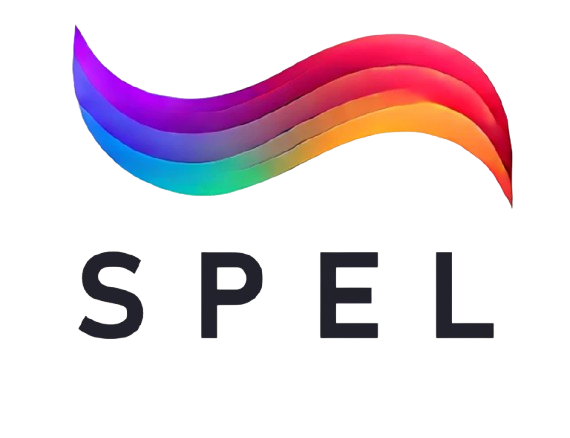

HANYANG UNIVERSITY ERICA

Soft Photonics & Electro-optics Lab소프트 포토닉스 및 전기광학 연구실 (SPEL)
한양대학교 ERICA 차세대반도체융합공학부 · 남승민 교수
액정·고분자·엘라스토머 같은 부드러운 소재를 설계해
빛(LIGHT), 에너지(ENERGY), 움직임(MOTION)을 제어하는 차세대 소자를 만듭니다.
빛(LIGHT), 에너지(ENERGY), 움직임(MOTION)을 제어하는 차세대 소자를 만듭니다.
LIGHT 가변 포토닉 소자
ENERGY 스마트 윈도우
MOTION 소프트 액추에이터
INTELLIGENCE 시뮬레이션 · AI 설계
잡아당기면 색이 변하는 고무 : 키랄 액정 엘라스토머 (CLCE)모든 연구의 출발점
소자 동작 × 나선 구조 시뮬레이션
실제 소자 동작 · 손으로 당긴 CLCE 필름
실험 영상
고무처럼 늘어나는 광학 필름색소가 아니라 나노 나선 구조가 빛을 반사해 색을 만듭니다 (구조색)
필름 내부에서 일어나는 일 · 액정 분자 나선 (helix)
실시간 판독 · 반사 스펙트럼
변형률 ε (얼마나 늘렸나)
0 %
나선 피치 P (한 바퀴 도는 길이)
400 nm
반사 파장 λ = n · P
640 nm
재생 시간 00.0초
Nam et al., Advanced Materials 35, 2302456 (2023) 보충 영상 1 · 원리: Bragg 반사 λ ≈ n·P
다중 픽셀 광소자 : 한 번 당기면 아홉 가지 색Adv. Mater. 2023 · 표지 논문
실제 소자 동작 × 픽셀 설계 시뮬레이션
실제 소자 동작 · 3×3 CLCE 픽셀 배열, 양축 인장
실험 영상
같은 필름, 같은 힘, 서로 다른 색픽셀마다 두께·경계 구조를 다르게 설계해 늘어나는 정도를 프로그래밍
픽셀 설계 시뮬레이션 · 픽셀별 국소 변형률 → 색
실시간 판독 · 픽셀별 반사 파장
전체 변형률 ε (필름 전체에 가한 힘)
0 %
서로 구분되는 색의 수
1 / 9 픽셀
파장 분리 폭 (가장 긴 λ − 가장 짧은 λ)
0 nm
재생 시간 00.0초
Nam et al., Advanced Materials 35, 2302456 (2023) · 보충 영상 3
광 암호화 소자 : 늘려야만 보이는 카멜레온Adv. Mater. 2023 · Light: Sci. & Appl. 2025
실제 소자 동작 × 두께 제어 시뮬레이션
실제 소자 동작 · 위장 광피부 (숨김 ↔ 발현)
실험 영상 · 2배속
평소에는 그냥 투명한 필름반사 파장을 눈에 안 보이는 적외선에 숨겨두고, 당기면 가시광으로 끌어옵니다
필름 내부에서 일어나는 일 · 두께가 다르면 늘어나는 정도가 다르다
실시간 판독 · 반사 스펙트럼 (가시광 창)
변형률 ε
0 %
해독 상태
숨김
가시광 영역에 들어온 구역
0 / 4 구역
재생 시간 00.0초
Nam et al., Adv. Mater. (2023) 보충 영상 10 · Nam et al., Light: Sci. & Appl. 14, 136 (2025)
수치해석으로 먼저 만들어 본다 : 시뮬레이션 · AI 기반 설계실험 ↔ 시뮬레이션 피드백 루프
유한요소 해석 × 데이터 기반 판독 검증
유한요소 해석 (FEM) · 앞 장면의 3×3 픽셀 배열, 컴퓨터 속 재현
시뮬레이션 · 변형률 분포
색 → 변형률 복원 알고리즘 검증 · 합성 CLCE 영상 (정답을 아는 데이터)
시뮬레이션 · 정답 vs 추정
광학
FDTD 전자기 해석Lumerical
나선 구조가 어떤 파장을 얼마나 반사할지 계산
역학
다중물리 유한요소 해석COMSOL · ABAQUS
픽셀·두께·경계 설계에 따라 어디가 얼마나 늘어날지 예측
데이터
머신러닝 · 역설계Python · MATLAB
원하는 색·감도에서 거꾸로 구조를 찾고, 색→변형률 판독을 학습
검증 지표 (오른쪽 영상)
상관계수 0.81 · 평균오차 2.6 %
정답 변형률 지도와 색으로 추정한 지도를 프레임마다 비교
재생 시간 00.0초
왼쪽: Adv. Mater. (2023) 보충 영상 3 (FEM) · 오른쪽: 연구실 내부 검증 영상
CLCE 바이오 센서 : 몸의 움직임을 색으로 읽는다배터리 · 전선 없는 무전원 광학 센서
실제 판독 × 응용 시뮬레이션
실제 판독 · 손가락으로 당긴 CLCE, 카메라 색 추적 (CIE 1931 색도도)
실험 영상 · MATLAB 실시간 색 추적
스마트폰 카메라 한 대면 충분한 센서영상의 색 좌표(x, y)를 프레임마다 읽어 변형률로 환산 → 전기 신호가 필요 없음
웨어러블 적용 · 손가락 관절 위 섬유 센서
실시간 판독 · 변형률 시간 기록
관절 굽힘 각도
0°
패치 색 → 변형률
0 %
색만 읽는 광학 모드라면 · 전기 판독 장비가 필요 없다
0배터리
0전선
0전자회로
1카메라
응용: 재활 운동 모니터링 · 웨어러블 헬스케어 · 수술 봉합부 변형 감시 · 소프트 로봇 피부
재생 시간 00.0초
가운데: Dual-mode fiber strain sensor, ACS Appl. Mater. Interfaces 15, 16063 (2023) 보충 영상 S3 · 왼쪽: 연구실 학부연구생 과제
Shape light with us호기심과 열정, 도전 정신을 가진 학생이라면 전공에 관계없이 환영합니다.
spel.hanyang.ac.kr
남승민 교수 · namsm@hanyang.ac.kr · 한양대학교 ERICA 차세대반도체융합공학부
Soft Photonics & Electro-optics Lab
Soft Photonics & Electro-optics Lab